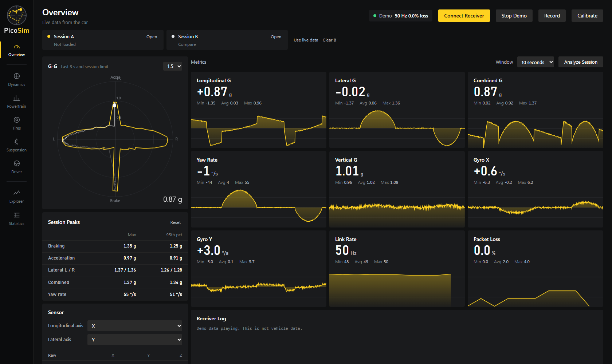
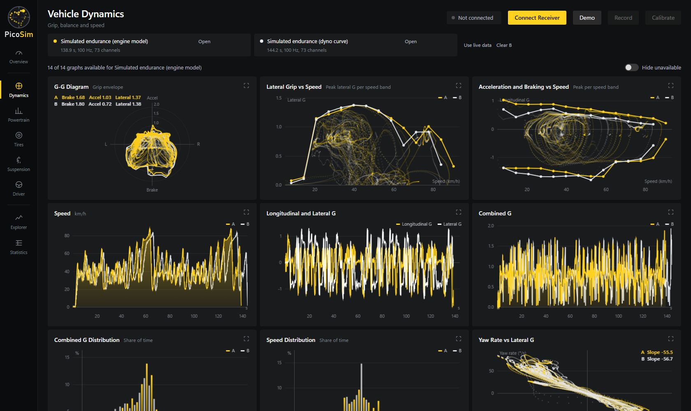
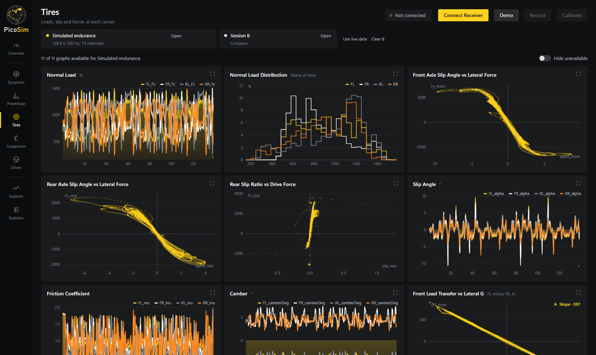
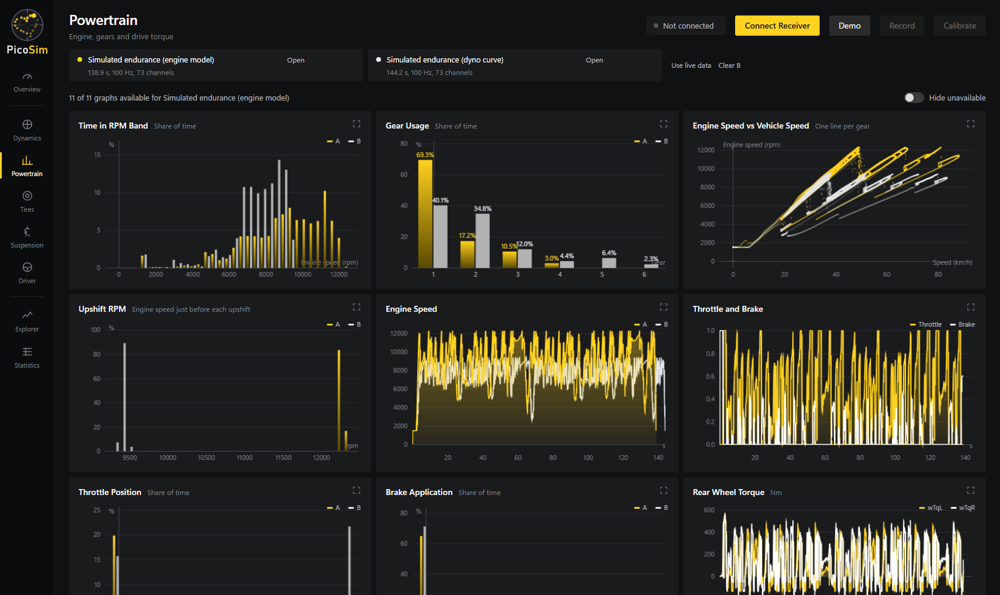

Telemetry
On-car data logging, driver dash and analysis software
The real-vehicle half of PicoSim: a data acquisition system that measures the same quantities the simulator predicts, so the model can be checked and calibrated against the car.
ESP32Arduino CANWeb SerialSince 2025
Why it exists
A simulator is only as good as the data used to check it. Commercial data loggers are expensive and closed, and they do not log in the format the simulator writes. This system is designed from the start so that a real run and a simulated run produce directly comparable data: the first step toward a self-calibrating PicoSim.
System
Data unit (on car)
IMU, GPS, suspension position (4 ch), wheel speed (4 ch), engine data from the ECU over CAN, SD-card logging, and a wireless link to the pits.
Driver dash
5″ sunlight-readable display (800×480, 1000 nit), 16-LED shift light and warning lights, driven from ECU data over CAN.
Pit receiver & analysis software
Wireless receiver on USB, read by a browser-based telemetry and analysis tool. No install, runs offline on the pit laptop.
Telemetry & analysis software
One tool for both sides of the project: it shows the car live in the pits, and it opens logs from the car and from the simulator in the same way, so they can be compared directly.
Open the app with demo data Open the app Source on GitHub
Runs in the browser. Connecting the pit receiver needs Chrome or Edge. Demo data is synthetic, not vehicle data. Any CSV log can be opened from the session bar or dropped onto the page.

Predefined graph library
Instead of building plots by hand after every run, the tool draws a fixed set of engineering graphs the moment a log is opened. Graphs that need a channel the log does not have are marked, so the same pages fill in automatically as sensors are added to the car.
| Page | Graphs | Examples |
|---|---|---|
| Vehicle Dynamics | 14 | G-G envelope, lateral grip vs speed, acceleration and braking limits vs speed, understeer gradient, yaw rate gain, speed and G maps |
| Powertrain | 11 | Time in RPM band, gear usage, upshift RPM, engine vs vehicle speed, pedal distributions, drive torque |
| Tires | 11 | Normal load per corner, slip angle vs lateral force per axle, slip ratio vs drive force, camber, lateral and longitudinal load transfer |
| Suspension & Aero | 8 | Travel and its distribution, roll and pitch gradients, spring forces, downforce and drag vs speed |
| Steering & Driver | 8 | Steering torque and aligning torque vs lateral G, steering distribution, share of full throttle, coasting, braking and overlap |
| Tools | — | Explorer (any channel against time or any other channel) and per-channel statistics |



Comparing real and simulated runs
- Two sessions at once. Any two logs (real vs simulated, setup A vs setup B) are drawn on every graph together.
- Reads both formats. The car logger's CSV and the simulator's telemetry export open the same way; channel names are matched automatically.
- Derived channels. Axle forces, load transfer, roll and pitch, yaw rate gain and driver input shares are computed on load.
How it connects to the simulator
| Measured on the car | Simulator counterpart | Used for |
|---|---|---|
| Accelerations, yaw rate (IMU) | Chassis accelerations, yaw rate | G-G envelope, handling balance, tire grip |
| Wheel speeds | Wheel angular velocity | Slip ratio, traction, braking |
| Suspension position | Suspension travel | Load transfer, roll and pitch, spring/damper and anti-roll bar settings |
| Engine data (CAN) | Powertrain state | Engine map, gear usage, shift points |
| GPS position, speed | Vehicle trajectory | Same-track, same-line comparison; lap reconstruction |
- Same channels, same format. Logs are being shaped to match the simulator's telemetry export, so a real lap and a simulated lap can be overlaid without manual conversion.
- Closing the loop. Differences between the two become the input for parameter identification (roadmap phases 3–4): tires, mass properties, powertrain.
- Test the software before the car. The simulator can generate the same data stream, so the dashboard and analysis tools can be developed and checked without the car running.
Status
-
Working done
- IMU reading and wireless transmitter on the data unit
- 16-LED shift light driven through a PWM driver
- Telemetry and analysis software: live overview, 52 predefined graphs, real-vs-simulated comparison
-
In progress in progress
- End-to-end wireless link to the pit dashboard
- Dash display bring-up; GPS at 10 Hz
-
Next planned
- ECU data over CAN to dash and logger
- Suspension position and wheel speed channels, SD logging
- Log format aligned with the simulator; first real-vs-simulated comparison